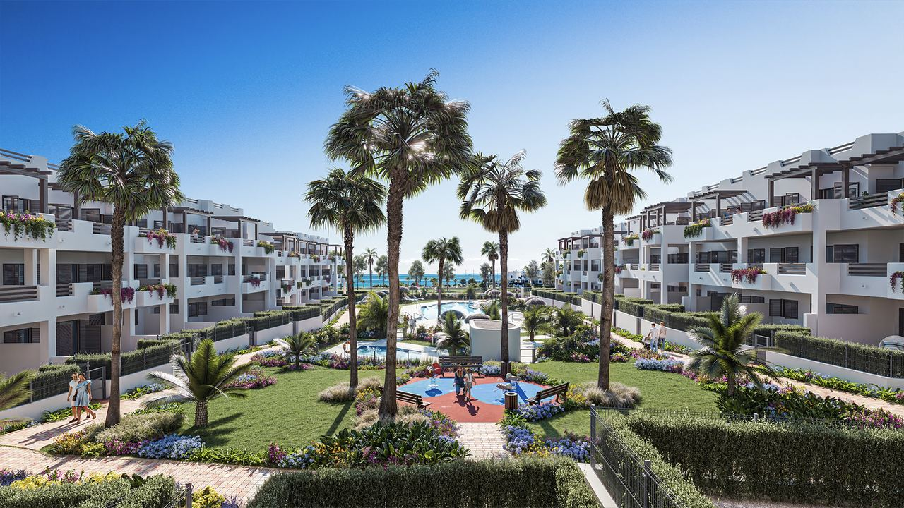
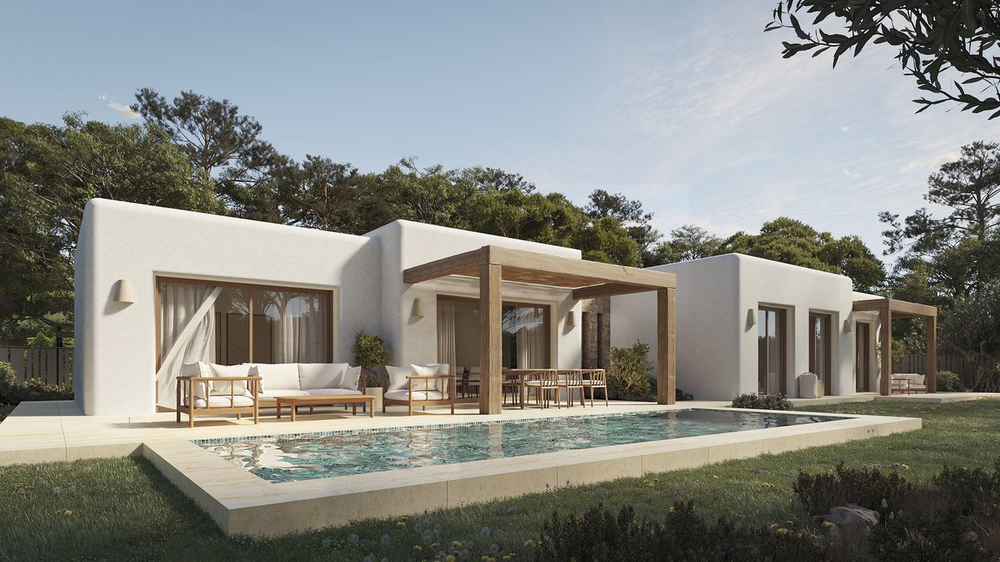

Buying in Spain · Tax
Property and Wealth Taxes in Spain – What Owners Pay Each Year
In short: Every owner in Spain pays IBI, a local property tax of about 0.4–1.1% of the cadastral value. Non-residents also pay income tax on the home every year, even if they never rent it out: 19% for EU and EEA residents and 24% for others, on 1.1–2% of the cadastral value. Wealth tax only starts above €700,000 of net assets in Spain, and the large fortunes tax above €3.7 million. A tax adviser costs far less than a missed return.
The taxes on buying a home in Spain are well known. The taxes you pay every year as an owner are less so, and that is where many foreign owners get caught out. Here is what you pay, how it is worked out and the mistakes to avoid.
Overview: which taxes apply to you?
| Tax | Who pays | How much |
|---|---|---|
| IBI (local property tax) | Every owner | About 0.4–1.1% of the cadastral value a year |
| Non-resident income tax (IRNR) | Non-residents | 19% (EU/EEA) or 24% (others) on imputed or rental income |
| Wealth tax | Net assets in Spain above €700,000 | About 0.2–3.5%, depending on the region |
| Large fortunes tax | Net assets above €3.7 million | 1.7–3.5% |
| Income tax (IRPF) | Tax residents | Progressive rates on worldwide income |
Being a resident or a non-resident is a tax question, not a question of where your passport is from. You are usually tax resident in Spain if you spend more than 183 days a year here, or your main business or family is here.
IBI – the local property tax

IBI (Impuesto sobre Bienes Inmuebles) is paid every year to the town hall by whoever owns the property on 1 January. It applies to residents and non-residents alike.
It is based on the cadastral value (valor catastral), an official value set by the land registry that is normally well below the market price. Each town sets its own rate, usually between 0.4% and 1.1%. On the Costa Blanca the rate is about 0.62% in Alicante, 0.67% in Torrevieja and 0.68% in Benidorm.
Example: with a cadastral value of €150,000 and a rate of 0.65%, the IBI is about €975 a year. You will find the cadastral value on last year's IBI receipt. Ask the seller for it before you buy, and set up a direct debit so you never miss a payment.
Non-resident income tax – even if you never rent

This is the tax many foreign owners do not know about. If you are not tax resident in Spain, you pay non-resident income tax (IRNR) on your Spanish home every year, using form Modelo 210.
If you do not rent it out
Spain assumes a notional income of 1.1% of the cadastral value (2% if the value has not been revised in the last ten years). You pay 19% on that if you live in the EU, Iceland or Norway, and 24% if you live elsewhere, including the UK and Switzerland. The return is due by 31 December of the following year.
Example: cadastral value €150,000 × 1.1% = €1,650 × 19% = €313.50 a year.
If you rent it out
You pay tax on the actual rent. Residents of the EU, Iceland and Norway can deduct costs such as IBI, community fees, insurance, repairs, mortgage interest and depreciation, and pay 19% on the profit. Everyone else pays 24% on the gross rent, without deductions. If you rent for part of the year, you declare the rent for those months and the notional income for the rest.
Wealth tax

Wealth tax (Impuesto sobre el Patrimonio) is charged on your net assets on 31 December. For non-residents it covers only assets in Spain, such as property, Spanish bank accounts and investments, minus any mortgage.
- The general tax-free allowance is €700,000. Residents also get up to €300,000 off for their main home.
- Rates rise from about 0.2% to 3.5% above the allowance.
- Rules vary by region. Andalusia and Madrid give a 100% rebate. In the Valencian Community, residents get a higher allowance of €1 million, rising to €2 million from the 2026 tax year.
In practice, wealth tax only affects owners of higher-value homes or larger portfolios.
The large fortunes tax
The solidarity tax on large fortunes (ITSGF) is a national tax that applies to net assets above €3 million after the €700,000 allowance, so in practice above about €3.7 million. Rates are 1.7%, 2.1% and 3.5%. It was introduced so that wealthy owners in regions with wealth tax rebates, such as Andalusia and Madrid, still pay something, and any wealth tax you pay is deducted from it. It does not affect owners of typical holiday homes.
If you become tax resident
Once you are tax resident, you no longer file Modelo 210. Instead you file the normal income tax return (IRPF) each spring, declaring your worldwide income. Rates are progressive. Savings income, such as interest, dividends and gains, is taxed at 19% to 30%. Rent from a long-term let of your Spanish home can qualify for a reduction of up to 90% in some cases.
You also declare foreign assets worth more than €50,000 per category (bank accounts, investments, property) on form Modelo 720. Tax treaties between Spain and most countries prevent you being taxed twice on the same income.
When you sell
- Capital gains tax. Non-residents pay 19% on the gain. The buyer must keep back 3% of the price and pay it to the tax office as a payment on account, which you reclaim or top up with your return.
- Plusvalía municipal. The town hall charges a tax on the rise in land value, based on the cadastral value and how long you owned the home. It is not due if you sold at a loss.
- Residents pay 19–30% on the gain, and over-65s selling their main home are exempt.
Common mistakes
- Not filing Modelo 210 because the home is not rented.
- Forgetting to declare holiday rentals, including those through online platforms, which now report to the tax office.
- Ignoring letters from the tax office, especially once you have left Spain for the season.
- Not checking wealth tax when buying a high-value home.
Late payment adds surcharges and interest, and the tax office can look back four years. Most owners use a gestor or tax adviser, which typically costs much less than a single penalty. Owners resident outside the EU may also have to appoint a tax representative in Spain.
Frequently asked questions
Do I pay tax on my Spanish holiday home if I do not rent it out?
Yes. Non-residents pay income tax on a notional income of 1.1% (or 2%) of the cadastral value: 19% for EU, Iceland and Norway residents and 24% for others, filed each year on Modelo 210.
How much is IBI in Spain?
Usually 0.4–1.1% of the cadastral value each year. On the Costa Blanca, for example, it is about 0.62% in Alicante and 0.67% in Torrevieja.
Do I have to pay wealth tax in Spain?
Only if your net assets in Spain exceed €700,000, or a higher regional allowance. Andalusia and Madrid give a 100% rebate.
Is there a 100% tax for non-EU buyers?
No. It was proposed in 2025, but by October 2026 it had not been passed by parliament. Buying taxes are the same for everyone.
Plan the taxes before you buy
Taxes on a Spanish home are moderate and predictable once you know them. Plan them into your budget from the start, and choose whether to buy in your own name, jointly or through a company with an adviser. Ask us for a cost estimate on any property you like, and we will put you in touch with a trusted tax adviser.
Sources: Agencia Tributaria – non-resident income tax (Modelo 210) · Ley del Impuesto sobre el Patrimonio (BOE)